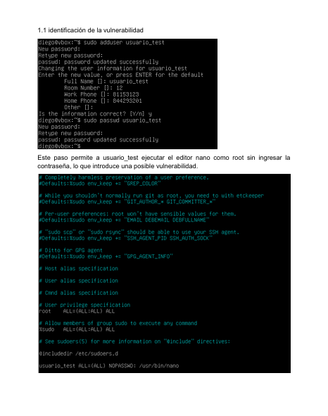
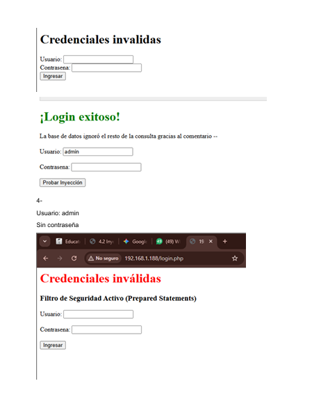
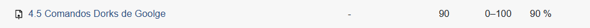
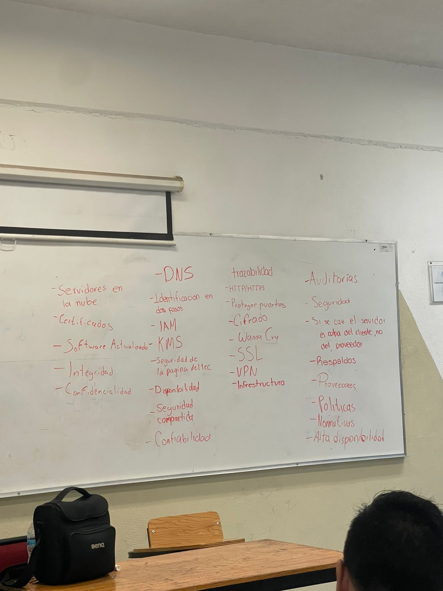
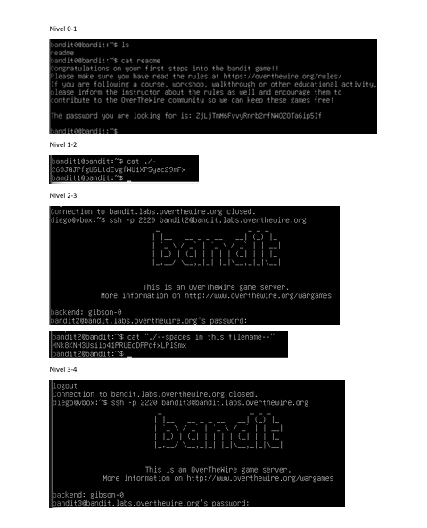
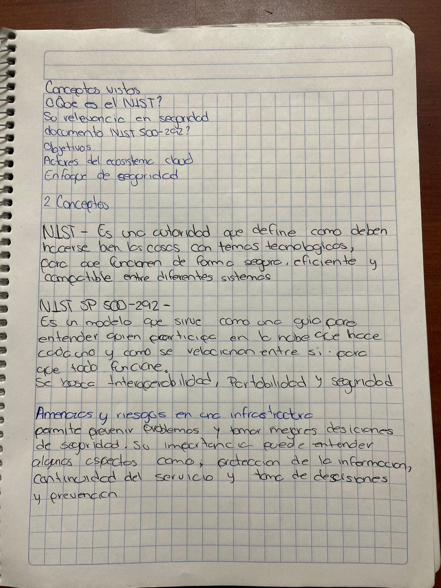
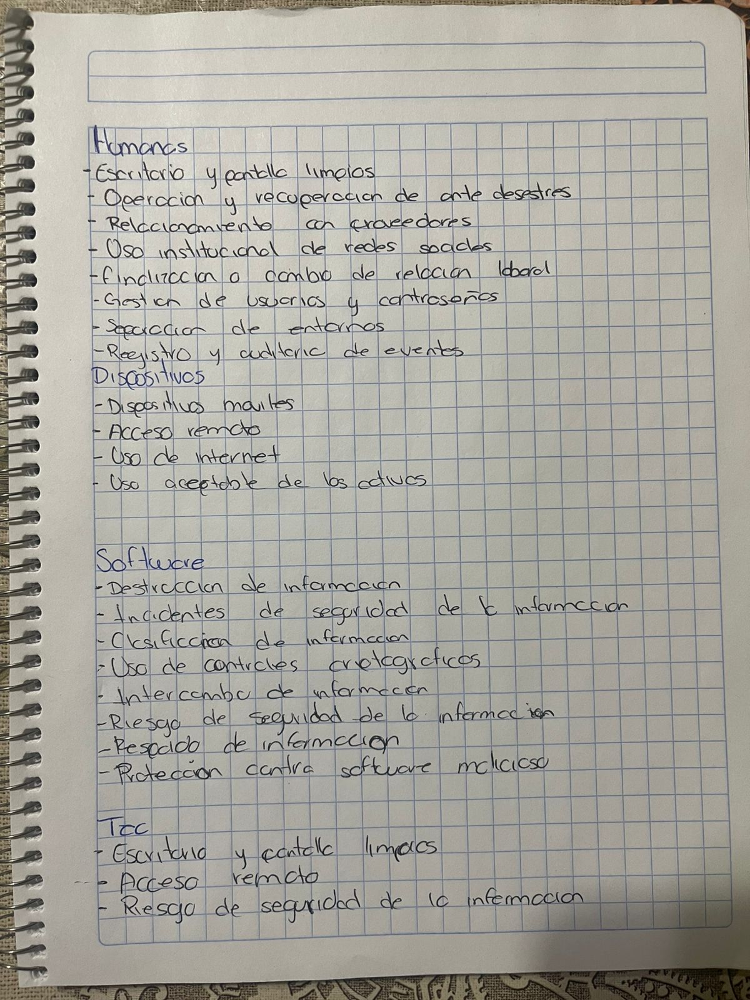
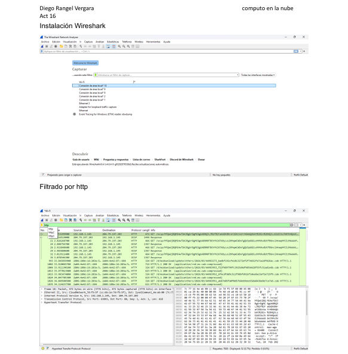

Descripcion: Identificar y explotar una vulnerabilidad de escalada de privilegios utilizando una configuración incorrecta de sudo en Linux.
Fecha: 5 Marzo 2026
Aprendizaje: El ejercicio ayudará a comprender los riesgos asociados con configuraciones erróneas y cómo mitigarlos.
Reflexion: Importante conocer vulnerabilidades para prevenirlas.

Descripcion: Demostrar cómo funciona la inyección SQL y cómo evitar esta vulnerabilidad en aplicaciones web.
Fecha: 19 Marzo 2026
Aprendizaje: Aprendi como funciona la inyeccion SQL.
Reflexion: Me hizo comprender riesgos en bases de datos.

Descripcion: Configuracion de seguridad en Apache.
Fecha: 20 Marzo 2026
Aprendizaje: Aprendi a proteger servidores web.
Reflexion: Importante reforzar infraestructura web.
Descripcion: Uso de comandos avanzados en Google.
Fecha: 9 Marzo 2026
Aprendizaje: Uso de busquedas avanzadas.
Reflexion: Entendi como encontrar informacion oculta.

Descripcion: Actividad de conceptos clave de seguridad.
Fecha: 11 Marzo 2026
Aprendizaje: Refuerce conceptos importantes.
Reflexion: Me ayudo a reforzar conocimientos teoricos.

Descripcion: La actividad se trata de descubrir un archivo que contiene la contraseña del siguiente nivel.
Fecha: 11 Marzo 2026
Aprendizaje: Practique habilidades de hacking etico.
Reflexion: Me ayudo a mejorar logica y analisis.

Descripcion: Hacer una síntesis del tema Amenazas y Riesgos en CN socializado en clase para expresar de forma escrita los conceptos.
Fecha: 18 Marzo 2026
Aprendizaje: Identifique amenazas comunes.
Reflexion: Importancia de la seguridad preventiva.

Descripcion: Clasificar las poíticas de ciberseguridad dadas en la página estática anexa en ésta actividad para revisar el contenido de las mismas y facilitar la estructura y organización de las reglas implementadas en una organización.
Fecha: 23 Marzo 2026
Aprendizaje: Comprendi normas de seguridad.
Reflexion: Importancia de cumplir normas.

Descripcion: Instalar herramienta Wireshark para capturar paquetes de red e identificar tráfico normal vs inseguro y comprender cómo se pueden interceptar datos para relacionar la captura de paquetes con la prevención de ataques.
Fecha: 25 Marzo 2026
Aprendizaje: Aprendi a monitorear trafico.
Reflexion: Util para prevencion de ataques.
